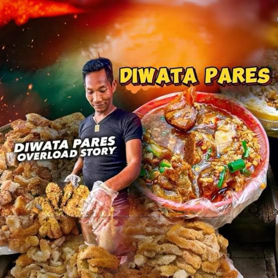

Welcome to Medyo sulit na Pares ni Engkanto.
Ang kambal na paresan ni Diwata Pares, imbes na Pares overload ang amin ay Pares underload. Kulang sa sahog pati rin sa lasa pero sulit na siya !
Beef Pares is a popular Filipino comfort food that originated as street food in Manila, Philippines, likely in the 1970s, with its name derived from the Spanish word for "pair," referring to the classic combination of tender, stewed beef with garlic fried rice and a savory broth, often with Chinese culinary influences like star anise. While its exact inventor is debated, the Tiu family's restaurant, Jonas, in Quezon City, is often credited with popularizing the dish and coining the term "pares".